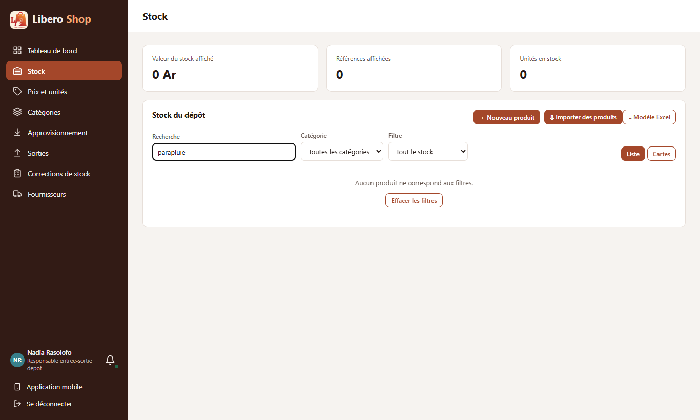
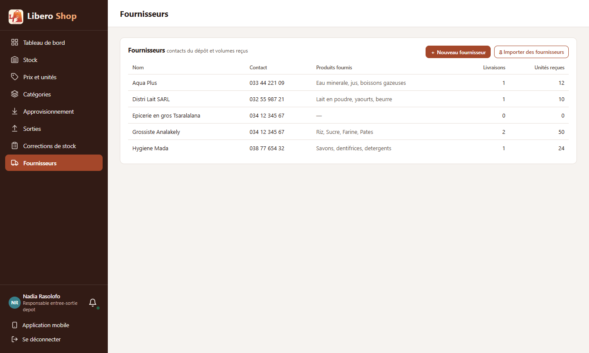
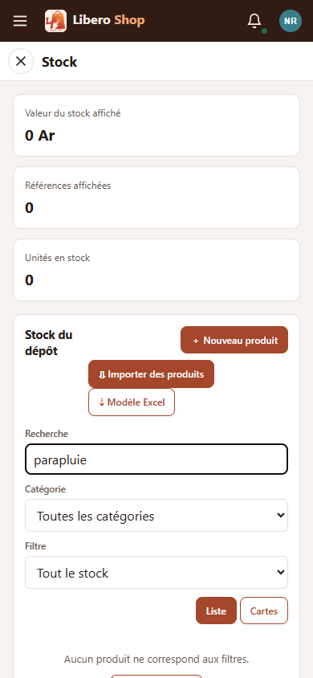

← Tous les comptes rendus de l'interface
UI-80Listes vides qui proposent l'action
- Une liste vide dit maintenant une phrase courte et montre le bouton qui la remplit.
- Stock : sans produit, « ＋ Nouveau produit » et l'import ; avec des filtres trop serrés, « Effacer les filtres ».
- Fournisseurs : « ＋ Nouveau fournisseur » (la fenêtre d'UI-32) et l'import, dans la liste vide et en haut de la page.
- Catégories et Utilisateurs : le bouton de création sous la phrase.
- La liste vide n'apparaît plus pendant le chargement du stock et des fournisseurs.
1. Le problème
Une boutique neuve ouvre des pages vides. Les messages expliquaient ce qui manquait (« sans fournisseur, aucun approvisionnement ne peut être enregistré ») mais pas où cliquer. Sur Stock, « Aucun produit ne correspond aux filtres » s'affichait même quand il n'y avait aucun filtre.
2. Ce qui a été fait
Les boutons sont ceux qui existaient déjà sur la page (mêmes fenêtres, mêmes droits). Une seule règle de style
commune, .empty-actions, les aligne sous la phrase.
3. Le résultat en images
Nadia — responsable de dépôt



Les listes vraiment vides (boutique neuve) ne se voient pas avec les données de démonstration ; elles sont vérifiées par les tests.
4. À éviter / attendu
[＋ Nouveau fournisseur] [Importer des fournisseurs]
5. Tableau récapitulatif
| Fichier | Changement |
|---|---|
ui/src/styles.scss | règle commune .empty-actions |
ui/…/features/depot-manager/stock.component.ts | vide « filtré » ou « pour l'instant », avec le bon bouton ; « Effacer les filtres » |
ui/…/features/depot-manager/suppliers.component.ts | « ＋ Nouveau fournisseur » en haut et dans la liste vide |
ui/…/shared/components/supplier-create-dialog.component.ts | sous-titre choisi par l'écran qui l'ouvre |
ui/…/features/depot-manager/categories.component.ts, features/admin/users.component.ts | bouton de création sous la phrase |
| Règle | Test |
|---|---|
| Liste des fournisseurs vide : la phrase et les deux boutons | suppliers.component.spec.ts |
| Le bouton de la liste vide ouvre la fenêtre de création | suppliers.component.spec.ts |
Tests : interface au vert (222 tests). Aucun changement côté serveur.
Signalé : les autres listes (catégories, utilisateurs, factures…) montrent encore « vide » pendant leur chargement : c'est le point UI-81.